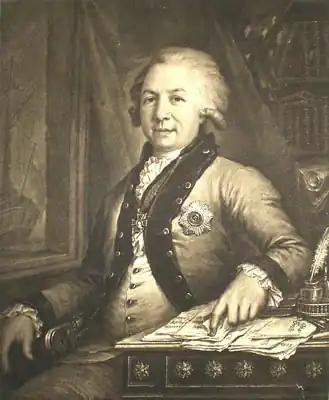

(1743-1816)
Гаврило Романович народився під Казанню в 1743 році. Тут, в селі Кармачи, знаходився родовий маєток його сім'ї. У ньому минуло дитинство майбутнього поета. Сім'я Державіна Гаврила Романовича була небагатою, дворянського роду. Гаврило Романович рано втратив батька, Романа Миколайовича, який служив майором. Матір'ю його була Текля Андріївна (дівоче прізвище — Козлова). Цікаво, що Державін є нащадком Багріма, татарського мурзи, який виселився з Великої Орди в 15 столітті.
У 1757 році вступив в Казанську гімназію Гавриїл Романович Державін. Біографія його вже в цей час відзначена ретельністю і прагненням до знань. Він добре вчився, однак закінчити навчання не вдалося. Справа в тому, що в лютому 1762 р. майбутнього поета викликали в Петербург. Він був визначений в Преображенський полк. Державін почав службу рядовим солдатом. Він провів у своєму полку 10 років, а з 1772 року обіймав посаду офіцера. Відомо, що Державін у 1773-74 рр. брав участь у придушенні повстання Пугачова, а також у палацовому перевороті, внаслідок якого Катерина II зійшла на престол. Громадська та літературна популярність до Гавриїлу Романовичу прийшла в 1782 році. Саме тоді з'явилася його знаменита ода "Феліція", восхвалявшая імператрицю. Державін, гарячий від природи, нерідко із-за своєї нестриманості мав труднощі. Крім того, у нього спостерігалося нетерпіння і старанність до роботи, не завжди рішення, що віталося. За указом імператриці в 1773 році була створена Олонецька провінція. Вона складалася з однієї округи і двох повітів. У 1776 році було сформовано Новгородське намісництво, до складу якого входили дві області — Олонецька і Новгородська. Першим губернатором став Олонецкой Гаврило Романович Державін. Біографія його на довгі роки буде пов'язана з адміністративною діяльністю в цій відповідальній посаді. На неї за законом покладався досить велике коло обов'язків. Гаврило Романович повинен був спостерігати за тим, як виконуються закони і як поводяться інші посадові обличчя. Для Державіна, однак, це не становило великих труднощів. Він вважав, що тільки від сумлінного ставлення кожного до своєї справи і дотримання чиновниками законодавства залежить наведення порядку в суді і місцевому управлінні. Підвідомчі установи вже через місяць після заснування губернії були обізнані про те, що всі обличчя, які перебувають на службі держави і порушили закон, будуть суворо каратися, аж до позбавлення чину або місця. Неухильно намагався навести порядок у своїй губернії Державін Гаврило Романович. Роки життя його в цей час відзначено боротьбою з корупцією. Однак це призвело тільки до конфліктів і розбіжностей з елітою. Катерина II в грудні 1785 р. видала указ про призначення Державіна на посаду губернатора тепер вже Тамбовської губернії. Він прибув туди 4 березня 1786 року. У Тамбові Гавриїл Романович знайшов губернію в повному розладі. Чотири глави змінилося за 6 років її існування. У справах панував безлад, не були визначені межі губернії. Величезних розмірів досягли недоїмки. Гостро відчувався брак освіти суспільства в цілому, а особливо дворянства. Гаврило Романович відкрив для юнацтва класи арифметики, граматики, геометрії, вокалу і танців. Духовна семінарія і гарнізонна школа давали дуже погані знання. Гавриїл Державін вирішив відкрити в будинку Іони Бородіна, місцевого купця, народне училище. Театралізовані вистави давалися в будинку губернатора, а незабаром почали будувати театр. Дуже багато для Тамбовської губернії зробив Державін, ми не будемо все це перераховувати. Діяльність його заклала фундамент для розвитку цього регіону. Сенатори Наришкін і Воронцов приїжджали для ревізії справ в Тамбовської губернії. Настільки очевидним було поліпшення, що Державін в вересні 1787 року був удостоєний почесної нагороди — ордена Володимира третього ступеня. Однак прогресивна діяльність Гаврила Романовича на цій посаді зіткнулася з інтересами місцевих дворян і поміщиків. Крім того, В. В. Гудович, генерал-губернатор, ставав у всіх конфліктах на бік наближених, які покривали, в свою чергу, місцевих шахраїв і злодіїв. Державін зробив спробу покарати Дулова, поміщика, який наказав побити за дрібну провину пастушонка. Однак ця спроба не вдалася, а неприязнь до губернатора з боку провінційних поміщиків зміцніла. Марними виявилися і дії Гаврила Романовича щодо припинення розкрадання місцевого купця Бородіна, який обдурив скарбницю, поставляючи для будівництва цеглини, а потім на невигідних для держави умовах отримав винний відкуп. Все збільшувався потік наклепів, скарг, рапортів на Державіна. В січні 1789 року він був відсторонений від своєї посади. Велику користь губернії принесла його недовга діяльність. У цьому ж році Державін повернувся в столицю. Він займав тут різні адміністративні посади. В цей же час Гавриїл Романович продовжував займатися літературою, створюючи оди (детальніше про його творчість ми розповімо трохи пізніше). Державін був призначений державним скарбником за Павла I. Однак він не порозумівся з цим правителем, оскільки за звичкою, що сформувалася у нього, Гавриїл Романович у своїх доповідях нерідко сварився і грубіянив. Олександр I, який змінив Павла, також не залишив без уваги Державіна, зробивши його міністром юстиції. Однак через рік поет був звільнений з посади, оскільки він служив "занадто ревно". У 1809 році Гаврило Романович був усунений з усіх адміністративних постів вже остаточно. Російська поезія до Гаврила Романовича була досить умовною. Державін сильно розширив її теми. Тепер в поезії з'явилися різноманітні твори, від урочистої оди до простої пісні. Також вперше у вітчизняній ліриці виник образ автора, тобто обличчястість самого поета. Державін вважав, що в основі мистецтва обов'язково повинна бути висока істина. Роз'яснити її здатна тільки поет. При цьому мистецтво може бути наслідуванням природи лише тоді, коли можливо наблизитися до осягнення світу, до виправлення вдач людей і до їх вивчення. Державін вважається продовжувачем традицій Сумарокова і Ломоносова. Він розвивав у своїй творчості традиції російського класицизму. Призначення поета для Державіна — осуд поганих вчинків і прославлення великих. Наприклад, в оді "Феліція" Гавриїл Романович прославляє освічену монархію в особі Катерини II. Справедлива, розумна імператриця протиставляється в цьому творі корисливим і жадібним придворним вельможам. На свій талант, свою поезію Державін дивився як на знаряддя, дане поетові більше для перемоги в політичних битвах. Гаврило Романович навіть склав "ключ" до своїх творів — докладний коментар, в якому сказано, які події привели до появи того або іншого з них. Державін в 1797 році купив маєток Званка і проводив в ньому щорічно кілька місяців. Вже в наступному році з'явився перший том творів Гаврила Романовича. До нього увійшли вірші, обессмертившие його ім'я: "На смерть кн. Мещерського", "На народження порфірородного отрока", оди "На взяття Ізмаїла", "Бог", "Водоспад", "Вельможа", "Снігур". Вийшовши у відставку, майже повністю присвятив своє життя драматургії Державін Гаврило Романович. Творчість його в цьому напрямку пов'язані з створенням кількох лібрето опер, а також таких трагедій: "Темний", "Євпраксія", "Ірод і Мариамна". З 1807 року поет брав активну участь у діяльності літературного гуртка, з якого пізніше утворилося товариство, яке отримало велику популярність. Називалося воно "Бесіда аматорів російського слова". У своїй роботі "Міркування про ліричної поезії або про оді" узагальнив свій літературний досвід Державін Гаврило Романович. Творчість його сильно вплинуло на розвиток художньої словесності в нашій країні. Багато поети орієнтувались на нього. Державін помер у своєму маєтку Званка в 1816 році. Труну з його тілом був відправлений по Волхову на баржі. Поет знайшов свій останній притулок у Спасо-Преображенському соборі біля Великого Новгорода. Цей собор знаходився на території Варлаамо-Хутинського монастиря. Тут же була похована і дружина Державіна Гаврила Романовича, Дар'я Олексіївна. Монастир був зруйнований у роки Великої Вітчизняної війни. Могила Державіна також постраждала. Перепоховання останків Гавриили Романовича і Дар'ї Олексіївни відбулося в 1959 році. Вони були перенесені в Новгородський Дитинець. У зв'язку з 250-річчям Державіна в 1993 році останки поета були повернуті в Варлаамо-Хутинский монастир. В школах не випадково й донині проходять такого поета, як Державін Гаврило Романович. Біографія і творчість його важливі не тільки з художньої, а й з виховної точки зору. Адже істини, які проповідував Державін, вічні.